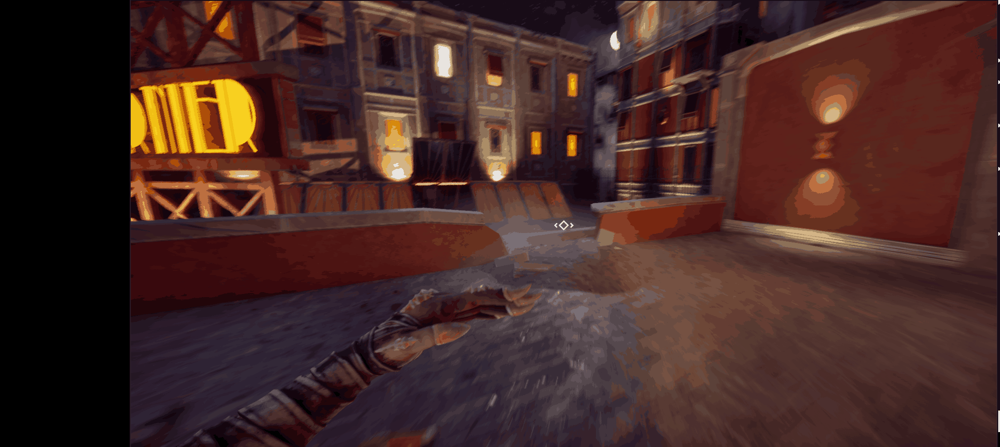
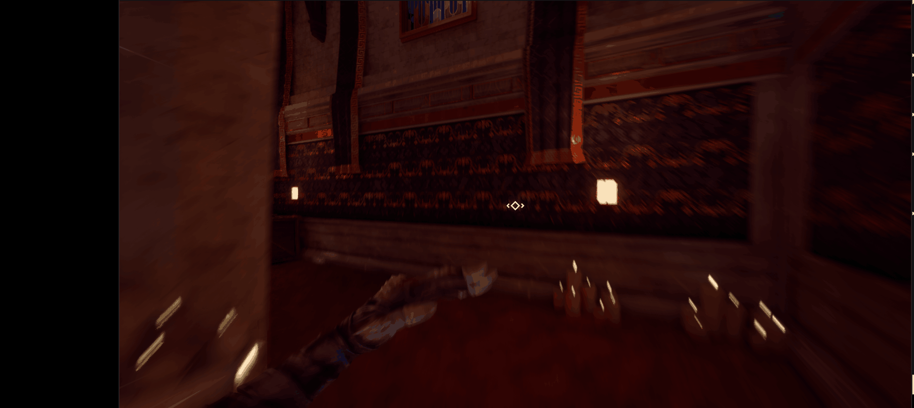
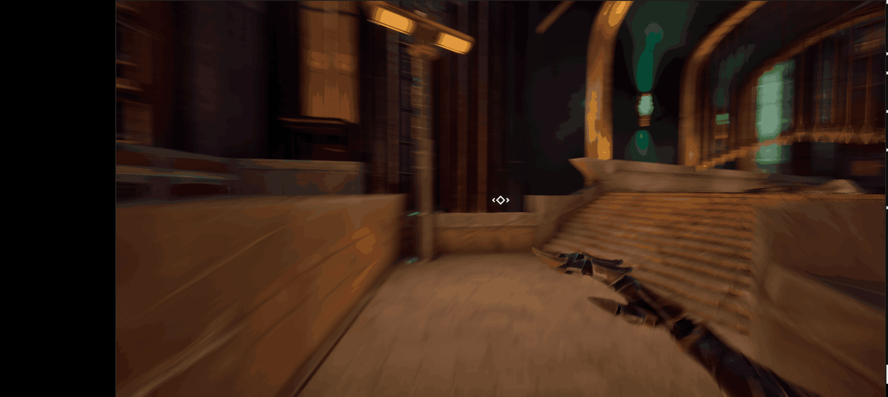
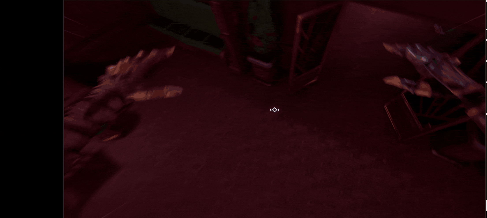

Massacrade
Play Massacrade on itch.io ↗Design Overview
Breakdown
Massacrade is a first-person parkour melee slasher set in an elegant city where you take control of Evelyn, a brutal rogue assassin on the run, using her acrobatic movement and combat expertise to escape. The game combines fluid parkour mechanics with intense melee combat, creating a blend of traversal and combat.
The core loop revolves around navigating through a verticality-rich city in the first linear section, where the player learns the mechanics of the game. In the second area, the player must use their newly learned skill to defeat multiple waves of enemies to escape the police forces.
Technical Details
Contribution: Game Designer (Level Design excluded), Programmer of everything Player related, VFX Artist
Platform: PC
Engine: Unreal Engine 5.7
Primary Language: Blueprint (with C++ for core systems)
Key Systems: Gameplay Ability System, Character Controller, Camera Mode Stack
Team Size: Core team of 5, 3 Sound engineers, 2 Directors
Type: 6th Semester Project
Inspirations: Ghostrunner, Mirror's Edge, Dishonored, Titanfall 2
Production Period: 4 months
Game Design
The design philosophy behind Massacrade centers on creating a seamless parkour movement and combining it with fast-paced melee combat. The goal was to keep the player inside a constantly moving Flowstate while navigating a rich art-deco city environment. One of my main design goals was to emphaize players to chain multiple movement actions into another. I tried to achive this by rewarding the player with raised maximum speed, a better momentum keep and special mechanics like special jumps.
Player Controller: My goal was to make the player feel in control of their movement at any given moment during gameplay. I designed the movement to feel fast-paced while interacting with the environment so players feel immersed in the game world. Players are rewarded for choosing challenging parkour routes and chaining movement actions together to maintain momentum and speed.
WallRun: Key for gaining height while significantly boosting speed. Development focused on balancing the movement arc and speed gained.

Dash/Dodge: Allows players to rapidly close distances and maintain forward momentum across wide gaps. Also used to dodge enemy attacks. Also Features a perfect dodge, when a Player dodges a enemy attack last second, the timeslow ability gets activated withut consuming ability Mana.

Vault: Seamlessly clears low-to-mid height obstacles without disrupting speed or flow. Really helped to make the character feel grounded and add more interaction between enviorement and player. A double tap of the space bar triggers the launch.

Slide: Used to navigate low clearance areas and maintain speed while transitioning between parkour chains. Can also be used to to get behind enemies to ht weakspots.

Attack: A simple forward melee attack that cuts through enemies and weakspots.

TimeSlow: Temporarily slows down time to give players room to make precise mechanical decisions.

Combat System: Originally based on hitting multiple randomized enemy weak spots. After playtesting, this was simplified because precise slicing interrupted the core design goal of continuous movement. Instead of hittig multiple Weakspots at a predetermind postiion every enemy is either one hit to enforce the Player Fantasay of being a brutal assaisin. Others have a weakspot at the back to enforce good movement and quick thinking.
Game Feel and Playtesting: Focused on smooth animation blending, responsive input, and low-latency feedback to prioritize player agency and aggressive, flowing gameplay.
Technical Design
The technical foundation of Massacrade is built on the Gameplay Ability System, which provides a scalable framework for managing abilities, effects, and gameplay interactions. This approach allowed us to rapidly prototype and iterate on mechanics while maintaining clean, data-driven design.
Gameplay Ability System (GAS): All character abilities—from basic movement to combat attacks—are implemented as GAS abilities. This unified system enables consistent cooldown management, and modular ability design that scales with the project complexity.
Camera System: I developed a sophisticated camera mode stack that dynamically switches between multiple camera configurations based on character state. The camera responds to movement intensity, combat encounters, and player input, always prioritizing visibility and communicating game state through positioning and animation.
Movement Mechanics: The parkour system includes running, jumping, wall running, climbing, vaulting, and sliding. Each ability is carefully tuned for responsiveness, with input buffering to anticipate player actions and create the feeling of tight, precise controls even in complex movement chains. Some abilities are based on a custom node called "Apply root motion constant force" based on the Unreal Lyra Starter game. This allowed me to cleanly adjust force over time with a curve, while also reducing errors with ground friction and unwanted behaviour.
Combat and Body Dismemberment Integration:Based on the shingeunsu Amputation lab asset. Heavily Modified to increase performance and project needs.
Key Learnings
GAS Mastery: Deep understanding of how to leverage the Gameplay Ability System for complex ability interactions. I learned to structure abilities for optimal performance and maintainability.
Iterative Polish and Game Feel: Production wise my Roadmap was always based of Feedback from ur Weekly Playtest sessions. This worked out great to push the character controler and game feel to the next Level.
Team Collaboration: Working within a team structure of 10+ people taught me the importance of clear communication, modular design, and maintaining consistent vision across different specialties and departments.